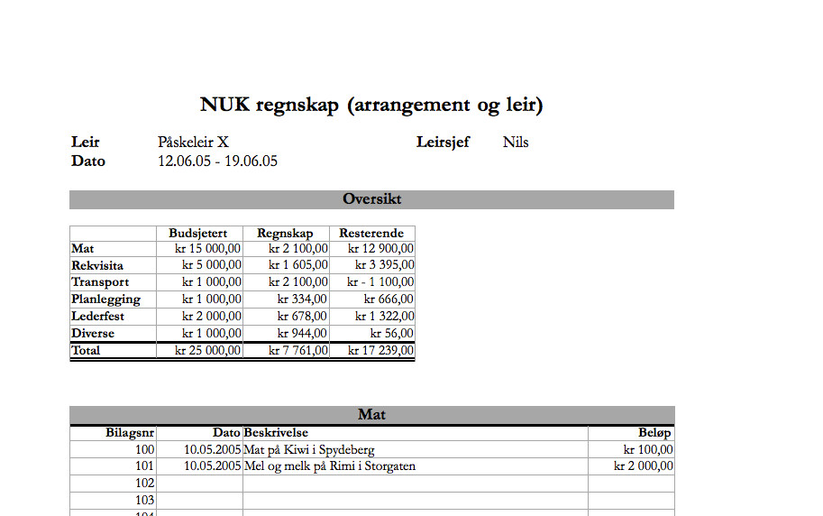

Skjemaer og maler for leirplanlegging
Alt du trenger for å planlegge og gjennomføre en leir. Klikk på lenker for å laste ned.
Mal for rapport

Rapporten kan fylles ut elektronisk og sendes til NUK via e-post. En stor takk for at du også sluttfører leiren/arrangementet ved å sende inn rapport, regnskap og nødvendige vedlegg. Dette er til stor hjelp for NUK, og for dem som i fremtiden skal ha ansvar for tilsvarende arrangement/leir.
Følgende vedlegg må være vedlagt:
- 1. Regnskap for leiren (se skjema under)
- 2. Fullstendig og oppdatert liste over deltakere på leiren
- 3. Program for leiren (med tidspunkter og navn på økter)
- 4. Beskrivelse av temaopplegg på leiren
Mal for regnskap
Mal for regnskap til leir med eksempler. Husk å legge ved kvitteringer!
Klikk for å laste ned mal for regnskap (.xls)Registrering av brukte Adoremus-sanger
TONO-skjema skal fylles ut for alle arrangementer i regi av NUK som f.eks. leir, helgesamlinger, distriktstreff eller lokallagskvelder. Ferdig utfylt skjema leveres til NUKs sekretariat (Akersveien 16a, 0177 Oslo) som sender skjemaet videre til TONO.
Komponister og sangforfattere får sin rettmessige lønn for arbeidet sitt ved at Staten eller andre aktører betaler et vederlag gjennom TONO. Betalingen (vederlaget) skjer på grunnlag av at musikken deres er brukt til noe. Ved å fylle ut og sende inn dette skjemaet sørger vi for at de som har laget sangene vi bruker får betalt for det. Det er Staten (ikke NUK) som betaler, i følge en avtale mellom Staten og TONO. Vi er lovpålagt å rapportere de sangene vi bruker i messen, til morgen- og aftenbønn, da dette regnes som fremførelse av et verk som tilhører komponisten/sangforfatteren som har laget det.
TONO-skjema for bruk av sangerRefusjon
Du kan få refusjon av utlegg og reiser for NUKs arrangementer og møter. Reisene blir dekket i henhold til NUKs regler for reiserefusjon. Se side to i reiserefusjonsskjemaet eller klikk her.